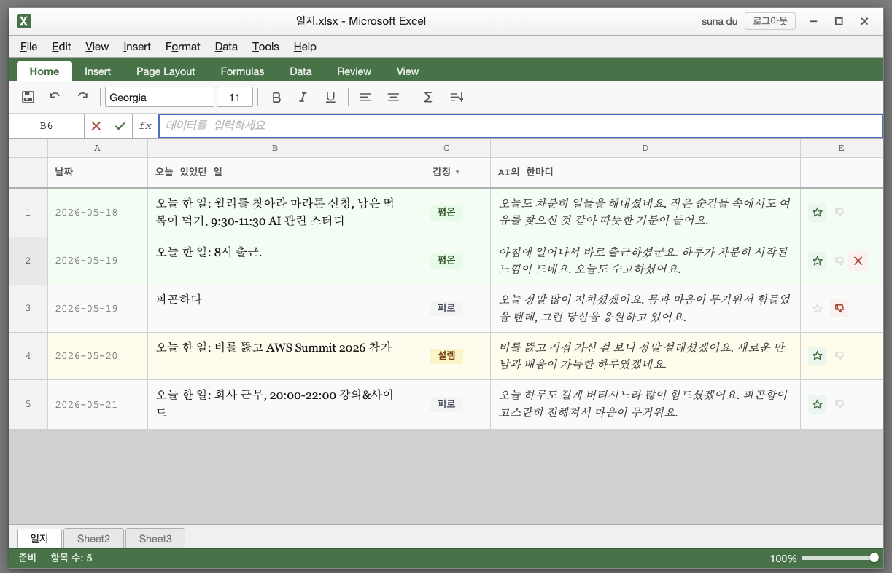
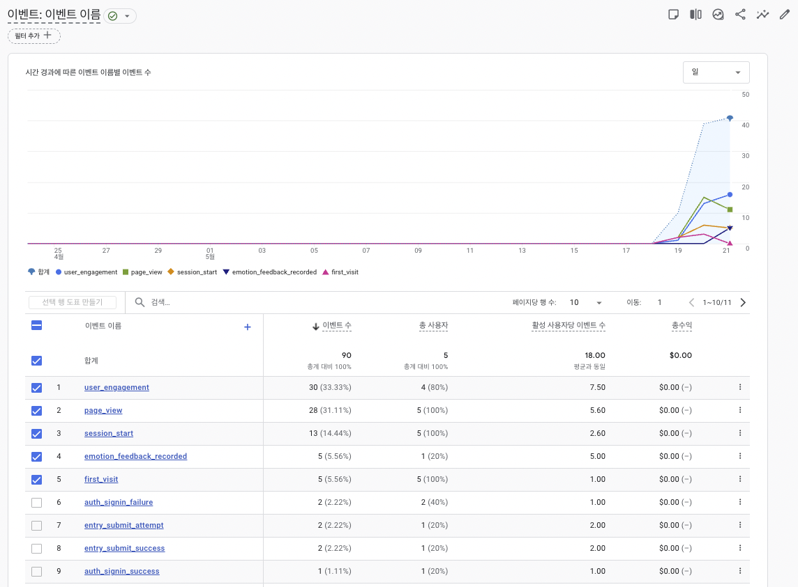
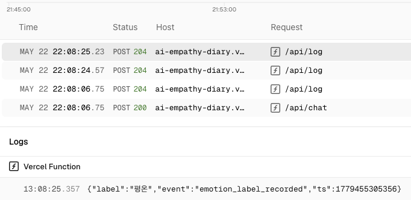
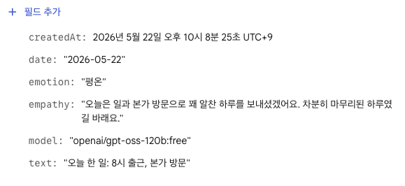

피드백 수집 인프라 완성
2026-05-21
피드백 수집 인프라를 완성한다.
좋아요/싫어요 피드백 UI, Firestore 저장, 이벤트 로깅, 모델 추적을 구현하여
Sprint 7 대시보드의 데이터 기반을 마련한다.
| # | 구분 | 항목 |
|---|---|---|
| 1 | OQ 결정 | 피드백 토글 허용 여부 |
| 2 | OQ 결정 | 대시보드 데이터 범위 |
| 3 | OQ 결정 | 모델명 UI 노출 여부 |
| 4 | OQ 결정 | 대시보드 구현 시점 |
| 5 | 확정 | Sprint 6 스코프 및 수용 기준 확정 |
| # | 결정 내용 | 비고 |
|---|---|---|
| OQ-1 | 피드백 토글 허용 | 변경마다 이벤트 발화, 집계는 최신 값 기준 |
| OQ-2 | 대시보드: 본인 데이터만 | Firestore 현행 보안 규칙 유지 |
| OQ-3 | 모델명 UI 직접 노출 금지 | 내부 저장 → 대시보드 집계 통계로만 표시 |
| OQ-4 | 대시보드 Sprint 7 이연 | 데이터 2주치 축적 후 시각화 |
BE
api/chat.js — model 필드 + 3단계 fallbackapi/log.js — emotion_feedback_recorded 이벤트 등록api/log.js — feedback, model 파라미터 허용FE
ui.js — 커스텀 SVG 피드백 버튼 (AI 응답 행만)sheet.css — hover / selected / dim 상태 CSSindex.html — 클릭 핸들러 + Firestore + logEventindex.html — AI 응답 시 model 필드 Firestore 저장QA
"unknown" 처리 확인피드백 버튼 UI
데이터 파이프라인
Firestore entry 스키마 확장
{ date, text, emotion, empathy, model, feedback, createdAt }
| 구분 | QA 발견 사항 | 조치 |
|---|---|---|
| HIGH | logEvent가 Firestore 저장 전 발화 — 저장 실패 시 이벤트 오발화 |
.then() 내부로 이동 ✓ 수정 완료 |
| PARTIAL | CSS :has() — Firefox 120 이하 미지원 (AC#7) |
.has-feedback 클래스로 대체 ✓ 수정 완료 |
| MEDIUM | feedback: null이 sanitize에서 drop → toggle-off 이벤트 미기록 |
'none' 문자열로 변환 ✓ 수정 완료 |
Sprint 7 후보
Open Questions
기술 부채
api/chat.js CORS — Firebase Auth 토큰으로 방어 중, Sprint 7 재검토데이터 축적 플랜

좋아요(☆) / 싫어요(▽) 버튼 — 행 3에 싫어요 선택 상태, 피드백 있는 행은 항상 표시

emotion_feedback_recorded 5회 수신 확인 (이벤트 4위) — Sprint 6 로그 파이프라인 정상 동작

확인 사항
emotion_feedback_recorded 이벤트도 동일 파이프라인(/api/log)으로 전송됨.
GA4에서 수신 확인 (이전 슬라이드).

확인 사항
entry 스키마
감사합니다